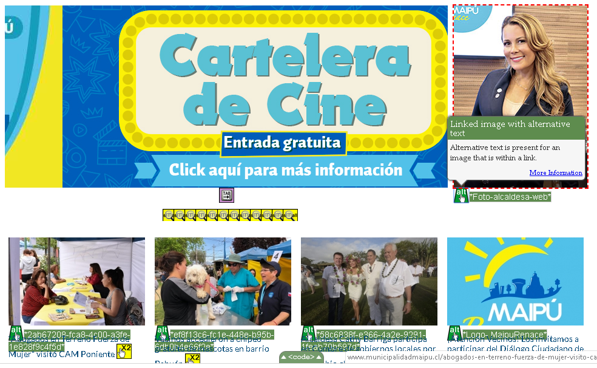
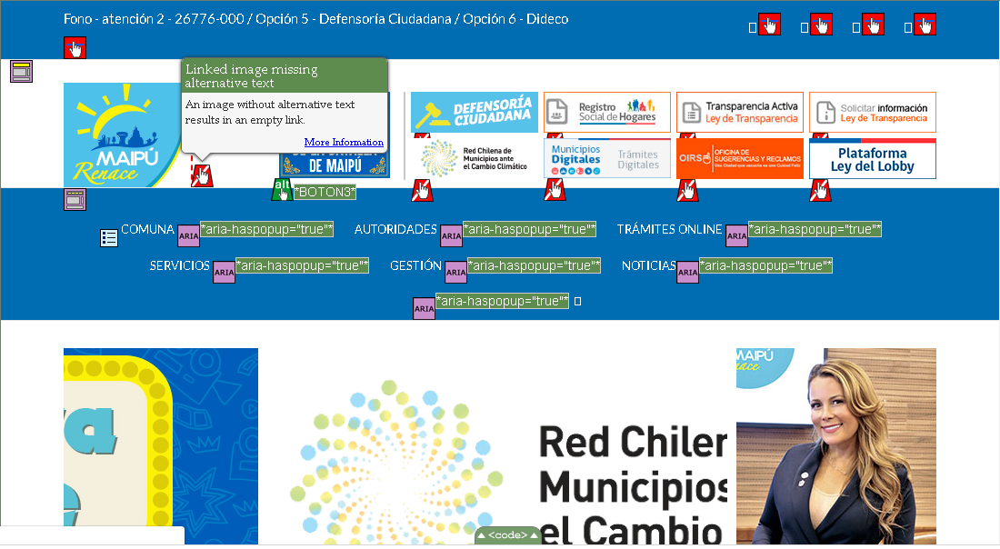
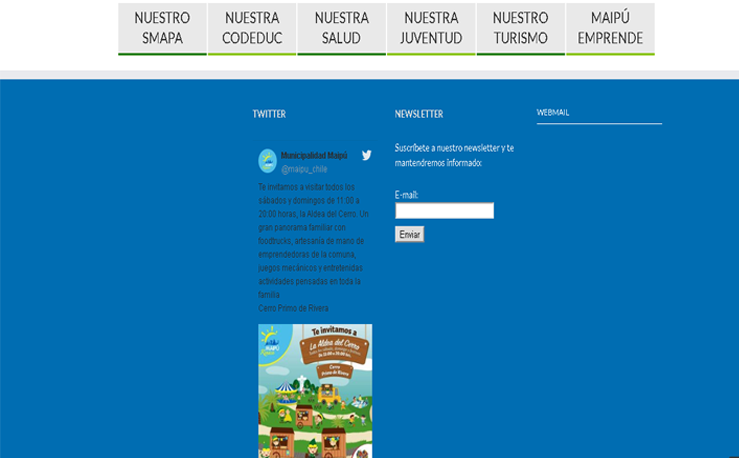
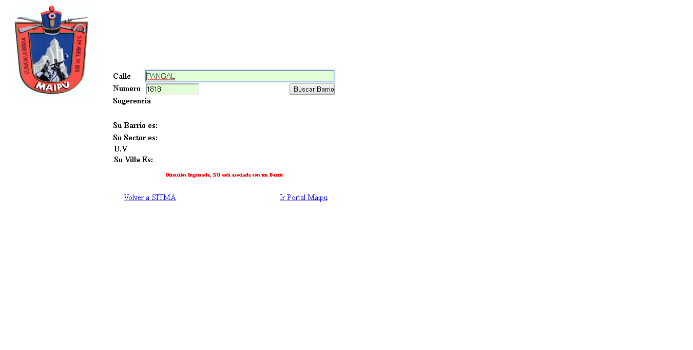
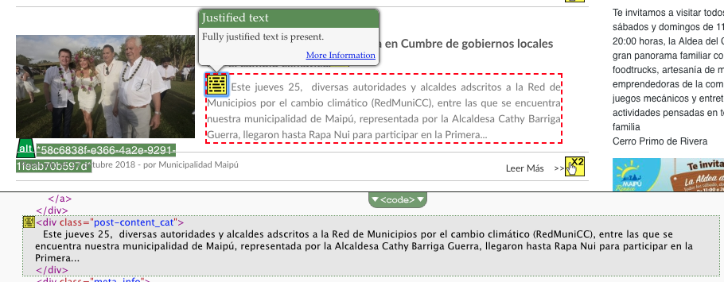
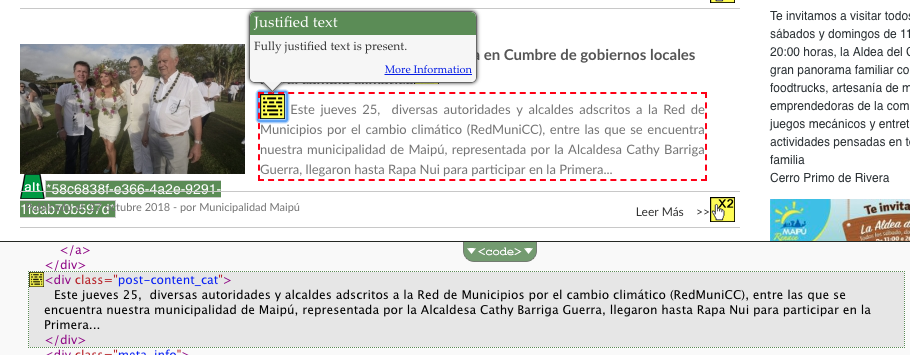
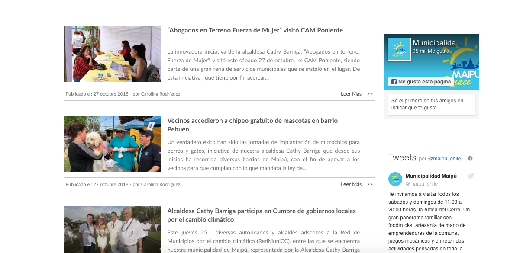

Municipalidad de Maipú
Evaluación de Sitio web
Análisis General
El sitio web posee buen contraste de colores, el tamaño tipográfico es fácil de leer y además es inclusiva, ya que contiene audios que leen en voz alta los textos más importantes (nivel AA). Abarca los justos servicios y problemáticas, pero con un gran problema de diagramación, ya que en general el sitio está muy saturado de información e imágenes, hay un problema de clasificación de elementos para hacer al sitio más amigable visualmente.
comentario imagen
lwdwqhdwqdjwqldwljd
Análisis de páginas
Página de Inicio
Errores de Código
En aspectos generales, el error que se repite en gran magnitúd en el index del sitio web, es la ausencia del atributo "alt" en las imagenes. Es decir, al faltarle este atributo, Google no podrá leer las imágenes y atribuirles un nombre determinado.
Otro error común en el sitio es la ausencia de texto en los links. Esto es un problema, ya que si el link no contiene texto, la funcion o propósito de este no será presentado al usuario. Esto puede crear confusión al "keyboard" y al lector de pantallas.
Accesibilidad
En general, hay una saturación de información. Se le da importancia a publicidades propias del municipio antes que links relevantes como "Nuestra salud" etc., aunque estos links que deberían ser una redirección rápida estan vacios. El principal problema es de distribución de la información y de clasificación de lo más importante a lo menos relevante. El footer además es innecesariamente muy extenso
Buscador de Barrios (Comuna)
Errores de Código
- La imagen no contiene un atributo alt
- No contiene “title”
- No está identificado el lenguaje (no cumple con nivel A)
- No tiene “head”
- No contiene atributo “label”
No se detectan los errores de forma inmediata, no establece una forma de escribir las direcciones ni contiene todas las existentes. Por ejemplo, se hizo la búsqueda de una dirección real la cual, al buscarla, aparece en rojo que "la dirección ingresada NO está asociada a un barrio" (cumple parcialmente con el nivel A y AA)
Accesibilidad
El gran problema que se capta en el buscador de barrios es que se pierde toda la navegación de la página, desapareciendo la grilla, diagramación y el menú (No cumple con el nivel AA). El estilo del formulario de búsqueda es muy básico, además cambia la tipografía y el logotipo. No es consecuente con el lenguaje global.
Ordenanzas (Gestión)
Errores de Código
wdhquhdiwehddihedweihdw

Accesibilidad
ajbdbdbwedhwebdhwbejndkjwedjkwenkdnwekwjndjkwndjkenjkde
esto se va a borrar
noticias
Errores de Código
Mantiene los mismos errores de codigos generales asosiados al texto alternativo en las imágenes, links vacios y mala utilización de la etiqueta label
en los párrafos presenta alertas sobre justificacion de texto, atributo de título con el mismo nombre, links redundantes
 

observaciones
Cada noticia se presenta resumida dentro de contenedores en una grilla central con actualizacion constante del contenido.Tiene lenguaje inclusivo con apoyo de audio,imagenes(algunas sin cambiar el nombre) y videos en algunos casos. El titulo es link hacia el detalle de la noticia y muestra dia, hora y nombre del responsable de la actualizacion. Dentro de la noticia permite compartir el contenido en las redes sociales. Paralelo a la noticia en la barra lateral muestra la informacion que se comparteen las de redes sociales.
Mejoras de Accesibilidad y SEO
lendwendjkewnd
- sdwiehdiehdiew
- ndkjqwndkjqndkjq
- wjndjkqwndkqjndkqjwnd
- qwljowjdoiwjdoijoqid
- qwldoqwjdoiwjdoijqwodj
- kqwdjwqhdoqwdwjhkqj